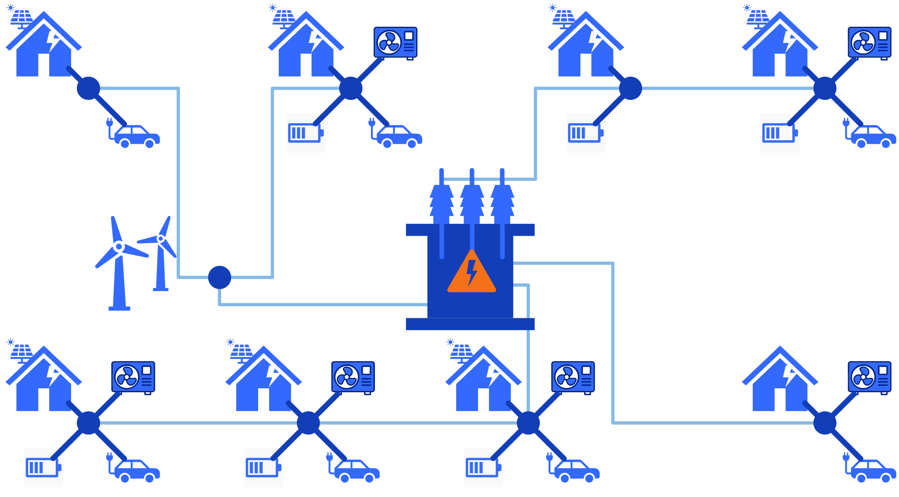

Residential grid congestion

Goal
We want to model the impact of residential grid connection issues on charging profiles charging demand can be high a the same time as other demand is high, so chargign session demands might be delayed, reduced or outrighht denied This will impact they way vehicles charge and change the charging .
We look at residential neighbourhood because it is likely that such conflicts will occur (simultaeous demand, also the fact that in other locations the grid might besolely dedicated to EV charging).
When to use
The parameters include_residential_grid_congestion (set to either true or false)
in the [grid] section of your scenario tells if you are using this modelling or not.
Set it to true if you want to add residetial grid congestion issues to our profile.
If you don't want to include such effects, or if you want to investigate them in another model (fr example an optimisation one) using the profiles provided by ChaProEV, or if it is not relevant (e.g. vehicles such as busses that charge in dedidcated locations)
This is mostly meant for cars.
Approach
Scope
One transformer for the neighbourhood with a given capacity and a certain amount of lines, ach having its own capacity (sum of lines capacity is transformer capacity) This provides two constraints. One at transformer level, and one at each level so issues could come at the whole neighbourhood level, as well as at a more local level (e.g. a street has many EVs and their users charge at the same time as they have elecxtricity demand for other purposes)
Power line capacities
The model distributes the transformer capacity over its connected power lines. For each power line, a relative capacity weight is drawn from a bounded beta distribution. These weights are subsequently normalised and multiplied by the transformer capacity. This introduces variation between the capacities assigned to individual power lines while ensuring that the sum of all line capacities remains equal to the transformer capacity:
and therefore:
This represents a deliberately conservative modelling assumption. The available transformer capacity is effectively divided between the individual power lines, and the model subsequently tests the power demand on each line against its assigned capacity. Because the line capacities sum to the transformer capacity, satisfying the capacity restriction of every individual line also guarantees that the total transformer-capacity restriction is satisfied.
In an actual distribution grid, the physical capacities of the outgoing power lines do not necessarily sum to the transformer capacity and may collectively exceed it. If one line is lightly loaded, another line may therefore carry a larger share of the transformer load, provided that its own physical capacity and the total transformer capacity are not exceeded. The model does not currently represent such dynamic sharing of transformer capacity between lines. Instead, each line receives a fixed share of the transformer capacity. This results in a conservative representation of the line-level capacity restrictions.
Assigning EV users to lines
To determine whether the individual power lines can support the EV charging demand connected to them, the model needs to know which EV users are connected to each line. This is done in two steps. First, the EV chargers are assigned to power lines. The users associated with each charger are then assigned to the same line.
Chargers are assigned while respecting the capacity of each power line. A charger can only be assigned to a line if the remaining line capacity is at least equal to the rated power of the charger. The sum of the rated powers of all chargers assigned to a line can therefore never exceed that line's capacity.
The chargers are processed from highest to lowest rated power. Assigning the largest chargers first reduces the risk of filling the lines with smaller chargers in such a way that insufficient capacity remains for a larger charger, even though a feasible allocation could otherwise have existed.
For each charger, the model determines which lines have sufficient remaining capacity. The charger is then randomly assigned to one of these eligible lines, with the probability of selecting a line proportional to its remaining capacity:
where \(E\) is the set of lines with sufficient remaining capacity for the charger. After assigning a charger, its rated power is subtracted from the remaining capacity of the selected line. Consequently, lines with more available capacity are more likely to receive chargers, while lines that are becoming more heavily occupied become progressively less likely to receive additional chargers.
This procedure allows both situations in which some lines have no EV chargers and situations in which multiple chargers are connected to the same line. If no line has sufficient remaining capacity for a charger, the assignment fails. The method is a greedy stochastic allocation: processing the largest chargers first reduces the chance of an unsuccessful allocation, but does not mathematically guarantee finding a feasible allocation whenever one exists.
Finally, the model looks up the EV users associated with each charger and assigns these users to the same power line as their charger. This provides the mapping between EV users and power lines that is subsequently used to aggregate their charging profiles and test the line-level capacity restrictions.
Note: The sum of the nominal powers of all chargers cannot exceed the transformer capacity. This is a conservative modelling assumption that ensures that all chargers connected to the transformer could operate simultaneously at their nominal power without exceeding the transformer capacity.
If the total charger power exceeds the transformer capacity, the model cannot assign all chargers within the available capacity. The following model inputs can be adjusted:
- Increase the transformer capacity.
- Reduce the nominal power of the chargers.
- Increase the proportion of street chargers. Street chargers are shared between users, reducing the number of chargers required.
- Reduce the street charger connectivity. More users then share each street charger, also reducing the number of chargers required.
Assignment of home chargers and connectivity
Home chargers are created after the users have been generated. The procedure distinguishes between users with their own driveway and users who park on the street. A user with an own driveway receives an individual home charger and therefore has a home connectivity of 1. Whenever the vehicle is at home, the home charger is available to that user.
For street parking, chargers are shared between multiple users. The configured street-parking connectivity is used to determine the number of chargers that should be available. For \(N\) street-parking users with a configured connectivity \(c\), the expected number of chargers is $$ N_{\mathrm{chargers, expected}} = N_{\mathrm{users}} \times c. $$ Because the model must create a discrete number of physical chargers, this value is rounded to the nearest integer, with half values rounded upwards. If there are street-parking users, at least one charger is created. A connectivity of zero is therefore not allowed when street-parking users are present.
For example, with 12 street-parking users and a configured connectivity of 0.25:
and three street chargers are created.
The street-parking users are first randomly shuffled and are subsequently assigned to the available chargers in round-robin order. This makes the assignment stochastic while distributing the users as evenly as possible over the chargers: the numbers of users assigned to any two chargers can differ by at most one.
After the users have been assigned, their actual home connectivity is recalculated from the number of users sharing their charger:
For example, a charger shared by four users gives each of those users a connectivity of 0.25, while a charger shared by three users gives each user a connectivity of approximately 0.333.
The recalculation is necessary because the configured connectivity represents the desired average availability, whereas the model contains a finite number of users and a discrete number of chargers. The exact configured connectivity can therefore not always be reproduced. For example, if 11 street-parking users have a configured connectivity of 0.25, the expected number of chargers is
which results in three physical chargers. The users are then distributed as 4, 4 and 3 users over these chargers, giving individual connectivities of 0.25, 0.25 and approximately 0.333, respectively. This preserves the physical interpretation of connectivity: it represents the probability that the shared charger assigned to a user is available when that user wants to charge.
The updated connectivity is stored on the user's home Location. The charging DataFrame is deliberately created only after the local grid and charger assignment have been constructed. This ensures that the stochastic charging-session availability draws use the final connectivity resulting from the actual charger allocation, rather than the original scenario-level connectivity.
Non-EV demand
Household node demand profiles
To determine the electricity demand on each power line, the model first creates an individual fixed non-EV electricity profile for every household node. This profile represents the net electricity exchange between the household node and the grid at each time step before EV charging and stationary-battery operation are taken into account.
Each household node can contain three components that contribute directly to this initial non-EV profile:
- Basic household electricity demand
- Heat-pump electricity demand
- Solar-panel production
Demand from the household and heat pump is represented as positive power, whereas electricity production from the solar panels is represented as negative power. The initial net non-EV profile of a household node is therefore calculated as:
A positive value indicates that the household node has a net electricity demand from the grid at that time step, while a negative value indicates that the household node is supplying electricity to the grid.
A household node can additionally contain a stationary battery. However, the stationary-battery power profile cannot yet be determined when the household node is created. Battery charging and discharging depend on the complete power situation, including EV charging. The battery is therefore initially represented by its capacity, charging-power limit, and discharging-power limit, while its power profile and charge level are initialised at zero.
The model creates the basic household demand, heat pump, solar panels, and stationary battery separately for each household node. Their stochastic properties are therefore determined at the individual household level. Only the basic household, heat-pump, and solar-panel profiles are combined at this stage to obtain the initial net non-EV profile.
These node-level profiles are subsequently assigned to the power lines based on the number of household nodes allocated to each line. The profiles of the nodes connected to a line are summed to obtain the line-level non-EV demand profile. At the same time, the stationary batteries belonging to these nodes are added to the stationary-battery capacity available on the corresponding power line.
Basic household electricity demand
The basic household electricity demand represents electricity consumption excluding EV charging, heat pumps, and home batteries. These components are modelled separately and are subsequently combined to obtain the complete net non-EV profile of each household node.
For each household, the model first draws the total basic electricity demand for the simulation period from a bounded beta distribution. The minimum, typical, and maximum demand are provided as model inputs. This allows individual households to have different total electricity demands while keeping these within the specified bounds.
The temporal distribution of this electricity demand is determined using a set of demand-profile shapes provided as model input. One of these shapes is randomly selected for each household, with user-defined probabilities determining how frequently the different shapes are selected.
The temporal resolution of the selected demand shape does not necessarily have to equal the temporal resolution of the simulation. If the demand shape has a lower temporal resolution, its values are repeated to obtain the required model resolution. For example, a 15-minute profile can be converted to a 1-minute profile by repeating each value 15 times. If the demand shape has a higher temporal resolution, consecutive values are averaged. The two resolutions must have an integer ratio; otherwise, the model raises an error.
After any required resolution conversion, the demand shape is normalised:
where \(s(t)\) is the normalised household demand shape. It is then scaled using the total electricity demand drawn for that household and converted from energy per time step to average power in kW:
where \(E_{\mathrm{household,run}}\) is the total basic household electricity demand over the simulation period in kWh and \(\Delta t\) is the model time-step duration in hours.
This ensures that integrating the resulting power profile over the complete simulation period reproduces the drawn household electricity demand:
The resulting profile represents the basic household electricity demand in kW at every model time step and is subsequently combined with the heat-pump and solar-panel profiles to obtain the household node's initial net non-EV power profile. Stationary-battery operation is determined separately at a later stage, once the complete power demand, including EV charging, is known.
Heat-pump demand
Heat pumps are included as an additional source of household electricity demand. Whether a household has a heat pump is determined stochastically using a user-defined heat-pump adoption rate.
For households with a heat pump, the total heat demand over the simulation period is drawn from a bounded beta distribution. The minimum, typical, and maximum heat demands are provided as model inputs. The resulting demand represents useful thermal energy and is therefore expressed in kWh of heat.
The coefficient of performance (COP) of the heat pump is also drawn from a bounded beta distribution. The COP describes the ratio between the useful heat delivered by the heat pump and its electricity consumption. The total electricity consumption required to provide the drawn heat demand is therefore:
where \(Q_{\mathrm{heat,run}}\) is the total heat demand during the simulation period and \(E_{\mathrm{HP,run}}\) is the corresponding heat-pump electricity demand.
The temporal distribution of the heat demand is determined using a set of heat-demand profile shapes provided as model input. One profile is randomly selected for each household with a heat pump using user-defined probabilities. The selected profile is resized to match the simulation period and temporal resolution, if necessary, and normalised so that its values sum to one.
The heat-pump electricity-demand profile is then calculated as:
where \(s_{\mathrm{heat}}(t)\) is the normalised heat-demand shape and \(\Delta t\) is the model time-step duration in hours. The resulting profile therefore represents the average electrical power demand of the heat pump in kW at every model time step.
The electricity consumed by the heat pump is also included in the household electricity-demand reference used to determine solar-panel production. The reference demand for sizing solar production therefore consists of the basic household electricity demand plus the heat pump's electrical energy demand:
For households without a heat pump, both the heat demand and heat-pump electricity-demand profile are zero.
Solar-panel production
Solar panels are included in the household node as a source of electricity production. Whether a household has solar panels is determined stochastically using a user-defined solar-panel adoption rate. Each household therefore has a probability of receiving solar panels equal to the specified adoption rate.
For households with solar panels, the total solar production over the simulation period is determined relative to the household electricity demand, including heat-pump electricity demand if a heat pump is present:
The total solar production is then:
where \(E_{\mathrm{reference}}\) is the household electricity-demand reference over the simulation period and \(r_{\mathrm{solar}}\) is the assumed ratio between solar production and household electricity demand.
The model allows this ratio to depend on whether the household also has a home battery. Separate solar-production-to-demand ratios can therefore be provided for households with and without a home battery. This makes it possible to represent a relationship between home-battery ownership and the amount of installed solar generation.
The temporal distribution of solar production is determined using a set of solar-production profile shapes provided as model input. One profile variant is randomly selected for each household with solar panels, using user-defined probabilities for the different variants.
The selected profile is resized to match the temporal resolution and length of the simulation, if necessary, using the same profile-reshaping procedure as for the basic household demand. The resulting production shape is normalised:
The normalised shape is subsequently scaled to the total solar production over the simulation period. The resulting energy per time step is converted from kWh to average power in kW by dividing it by the model time-step duration in hours:
where \(\Delta t\) is the model time-step duration in hours.
Solar production is represented as negative power because the grid convention used in the model considers electricity consumption to be positive and electricity production to be negative. Consequently:
For households without solar panels, both solar production and the corresponding power profile are zero. The solar-production profile is subsequently combined with the basic household and heat-pump demand profiles to obtain the household node's initial net non-EV power profile.
Stationary batteries
Stationary batteries can be present both at household nodes and in combination with EV chargers. Unlike basic household demand, heat-pump demand, and solar production, a stationary battery does not receive a fixed power profile when the residential grid is initialised. Its charging and discharging behaviour depends on the complete power situation, including EV charging, and can therefore only be determined at a later stage.
During grid initialisation, the model consequently determines the battery's energy capacity in kWh and its maximum charging and discharging powers in kW. Its charge-level and power-profile series are initially set to zero.
Household stationary batteries
Whether a household has a stationary battery is determined stochastically. Different adoption rates can be specified for households with and without solar panels.
For a household that receives a stationary battery, its capacity is based on the household's average daily electricity demand and solar production during the simulation period. Three separate contributions are considered:
- basic household electricity demand;
- heat-pump electricity demand;
- solar-panel production.
The duration of the simulation period in days is:
where \(N_{\mathrm{steps}}\) is the number of model time steps and \(\Delta t\) is the time-step duration in hours.
The capacity associated with basic household demand is:
where \(d_{\mathrm{basic}}\) is the configured number of reserve days for basic household demand.
For heat-pump demand, the thermal energy demand is first converted to electrical energy using the heat pump's COP:
where \(d_{\mathrm{HP}}\) is the configured number of reserve days for heat-pump electricity demand.
The solar-production contribution is:
where \(d_{\mathrm{solar}}\) is the configured number of reserve days associated with solar production.
The total stationary-battery capacity of the household is then:
The maximum charging and discharging powers of household stationary batteries are specified directly by the grid parameters.
Stationary batteries associated with EV chargers
EV chargers can also receive a stationary battery. Whether this occurs is determined stochastically using the configured adoption rate for stationary batteries associated with EV chargers.
The capacity of such a battery is based on the rated EV-charging power and a configured number of reserve hours:
This means that a fully charged stationary battery contains enough energy to provide the charger's rated charging power for the configured reserve duration, or a lower power for a correspondingly longer duration.
The stationary battery's maximum discharging power is equal to the charger's EV-charging power:
The stationary battery's maximum charging power is equal to the charger's reverse-power capability:
The latter represents the reverse power direction through the charger.
Aggregation of stationary batteries on power lines
Stationary batteries are ultimately represented at power-line level. Batteries associated with EV chargers are assigned directly to the line containing the corresponding charger. Household stationary batteries are assigned to the line to which their household node is allocated.
For all stationary batteries connected to a line, their capacities and power limits are added:
where \(B_i\) is the set of stationary batteries assigned to line \(i\).
The charge-level and battery-power series are aggregated in the same way. Because no battery dispatch has yet taken place during grid initialisation, these series initially contain zeros.
The resulting line-level stationary battery therefore represents the combined stationary-battery capacity and power capability connected to that power line. Its actual charge level and power profile are determined later, when the complete line load, including EV charging, is known.
Modelling assumption: The batteries connected to a power line are treated as a single aggregated stationary battery at line level. Their capacities, charging powers, discharging powers, charge levels, and power profiles are added together. This means that the model does not preserve constraints associated with the distribution of stored energy between the individual physical batteries once they have been aggregated.
Assigning household nodes to lines
The household nodes are distributed over the power lines proportionally to their capacities. For each line, the ideal number of household nodes is first calculated from its share of the total line capacity:
Since the number of household nodes assigned to a line must be an integer, these ideal values cannot generally be used directly. The model therefore applies the largest remainder method. First, the ideal number of nodes for each line is rounded down to the nearest integer. This generally leaves a small number of household nodes unassigned. These remaining nodes are assigned, one by one, to the lines with the largest fractional remainders in their ideal allocations. This ensures that the total number of assigned nodes is exactly equal to the number of households, while keeping the distribution as close as possible to proportional to the line capacities. A line may receive no household nodes if the number of households is small relative to the number of lines or its proportional allocation is sufficiently small.
Assigning non-EV demand to lines
After determining the number of household nodes connected to each power line, the corresponding non-EV demand profiles are assigned to these lines. The household profiles have already been generated using random draws, so no additional randomisation is applied during this assignment. Instead, the profiles are assigned sequentially according to the previously determined number of nodes per line.
For each power line, the non-EV demand profiles of all household nodes assigned to that line are summed to obtain a single line-level non-EV demand profile:
where \(N_i\) is the set of household nodes assigned to line \(i\). The resulting profile represents the initial non-EV household demand connected to that power line at each time step, before stationary-battery operation is included.
At the same time, the stationary batteries belonging to the assigned household nodes are added to the stationary-battery object of the corresponding power line. Their capacities, charging-power limits, discharging-power limits, charge levels, and power profiles are summed. Any stationary batteries associated with EV chargers have already been assigned to their chargers' respective power lines.
The resulting power line therefore contains both an initial fixed non-EV power profile and an aggregated stationary battery. The battery power profile is initially zero and is determined later together with EV charging. The eventual power on a line can therefore be represented conceptually as:
using the model convention that electricity demand is positive and electricity supply is negative. Battery charging therefore contributes positive power, whereas battery discharging contributes negative power.
Parameters
They are in the [grid] section of your scenario
[grid]
include_residential_grid_congestion = true
home_location_name = 'home'
own_driveway_name = 'own_driveway'
street_parking_name = 'street_parking'
transformer_capacity_kW = 250
amount_of_power_lines = 10
line_capacity_weight_min = 0.8
line_capacity_weight_typical = 1.0
line_capacity_weight_max = 4.2
amount_of_households = 200
non_EV_demand_header = 'Non EV demand (kW)'
[grid.EV_demand_matching_DF]
time_header = 'Time tag'
non_EV_demand_header = 'Non-EV demand (kW)'
EV_demand_header = 'EV demand from grid (kW)'
capacity_exceeded_header = 'Capacoty exceeded?'
extra_capacity_needed_header = 'Extra capacity needed (kW)'
columns = [
'Time tag', 'Non-EV demand (kW)', 'EV demand from grid (kW)',
'Capacity excceed?', 'Extra capacity needed (kW)']
[grid.households]
# THose are values over the whole run (typically, a year)
run_consumption_kWh_excluding_EV_heat_pump_home_battery_min = 1_500
run_consumption_kWh_excluding_EV_heat_pump_home_battery_typical = 2_500
run_consumption_kWh_excluding_EV_heat_pump_home_battery_max = 3_000
possible_profile_shape_references = ['1.00_E1A_AZI_A', '1.00_E1A_AMI_A']
possible_profile_shape_references_weights = [0.8, 0.2]
profiles_shapes_source = 'input/household_profiles.csv'
[grid.heat_pumps]
adoption_rate_heat_pumps = 0.25
run_heat_pump_consumption_heat_kWh_min = 1_000
run_heat_pump_consumption_heat_kWh_typical = 1_200
run_heat_pump_consumption_heat_kWh_max = 1_400
COP_min = 2.5
COP_typical = 2.7
COP_max = 3.0
profiles_shape_source = 'input/heat_shapes.csv'
profile_variants = ['Ref1', 'Ref2']
profile_proportions = [0.42, 0.58]
[grid.solar_panels]
adoption_rate_solar_panels = 0.26
run_production_as_proportion_of_demand_if_no_battery = 1.00
run_production_as_proportion_of_demand_if_battery = 1.00
profile_variants = ['South', 'East-West']
profile_proportions = [0.8, 0.2]
profile_shapes_source='input/solar.csv'
[grid.home_batteries]
adoption_rate_for_EV_chargers = 0.89
EV_reserve_hours = 2.6
adoption_rate_home_batteries_if_solar_panels = 0.42
adoption_rate_home_batteries_if_not_solar_panels = 0.06
charging_power_kW = 6.0
discharging_power_kW = 6.0
reserve_days_basic = 1.0
reserve_days_heat_pump = 0.8
reserve_days_solar_panels = 1.5
Residential grid congestion
include_residential_grid_congestion determines whether residential grid
congestion is included in the simulation.
Set this parameter to true to model the effect of residential transformer and
power-line capacity restrictions on EV charging. Set it to false if these
effects should not be included.
Home location name
home_location_name specifies the name of the location at which the residential
grid model applies. This is generally the home or base location of the cars.
The value must correspond to the name used for this location elsewhere in the scenario.
Own driveway name
own_driveway_name specifies the home-location variant representing users with
their own driveway and therefore an individual home charger.
The value must correspond to the variant name used in the location configuration.
Street parking name
street_parking_name specifies the home-location variant representing users
who park on the street and use shared street chargers.
The value must correspond to the variant name used in the location configuration.
Transformer capacity
transformer_capacity_kW specifies the capacity of the neighbourhood
transformer in kW.
The transformer capacity is distributed over the power lines connected to the transformer.
Amount of power lines
amount_of_power_lines specifies the number of power lines connected to the
transformer.
Line capacity weights
line_capacity_weight_min, line_capacity_weight_typical, and
line_capacity_weight_max define the range used for
drawing the relative
capacity weight of each power line.
A separate weight is drawn for every line. The resulting weights are normalised so that the capacities assigned to all power lines together equal the transformer capacity.
Minimum line capacity weight
line_capacity_weight_min specifies the minimum value of the bounded
distribution from which the line capacity weights are drawn.
Typical line capacity weight
line_capacity_weight_typical specifies the typical value of the bounded
distribution from which the line capacity weights are drawn.
Maximum line capacity weight
line_capacity_weight_max specifies the maximum value of the bounded
distribution from which the line capacity weights are drawn.
Amount of households
amount_of_households specifies the number of household nodes represented in
the neighbourhood.
These households are distributed over the power lines proportionally to the capacities of the lines.
Non-EV demand header
non_EV_demand_header specifies the name used for the line-level non-EV demand
profile series.
EV dmeand matching DF
Settings related to the DataFrame from EV demand matching
Time header
Name of the column where time tags appear
Non EV demand header
Name of the column where the non-EV demand appears
EV demand header
Name of the column where the EV demand(from the grid) appears
Capacity exceeded header
Name of the clumn where a boolean telling us if we exceeded the line capacity appears
Extra capacoity needed header
Name of thecolumn where the size of the extra capacity needed appears
Households
The [grid.households] section defines the basic household electricity demand.
This excludes EV charging, heat-pump demand, and stationary-battery operation.
Minimum basic household demand
run_consumption_kWh_excluding_EV_heat_pump_home_battery_min specifies the
minimum basic household electricity demand over the complete simulation period,
in kWh.
Typical basic household demand
run_consumption_kWh_excluding_EV_heat_pump_home_battery_typical specifies the
typical basic household electricity demand over the complete simulation period,
in kWh.
Maximum basic household demand
run_consumption_kWh_excluding_EV_heat_pump_home_battery_max specifies the
maximum basic household electricity demand over the complete simulation period,
in kWh.
The minimum, typical, and maximum values are used to draw the total basic electricity demand of each household.
These values refer to the complete model run. When the model represents one year, they therefore represent annual electricity consumption.
Possible household profile shapes
possible_profile_shape_references specifies the names of the profile shapes
that can be selected to distribute the total basic household electricity demand
over time.
The names must correspond to columns in the household profile-shape source file.
Household profile-shape weights
possible_profile_shape_references_weights specifies the probabilities with
which the corresponding household profile shapes are selected.
The order of these probabilities must correspond to the order in
possible_profile_shape_references.
Household profile-shape source
profiles_shapes_source specifies the path to the CSV file containing the
available basic household electricity-demand shapes.
Heat pumps
The [grid.heat_pumps] section defines the adoption, heat demand, COP, and
temporal demand shapes of household heat pumps.
Heat-pump adoption rate
adoption_rate_heat_pumps specifies the probability that a household has a
heat pump.
Minimum heat demand
run_heat_pump_consumption_heat_kWh_min specifies the minimum household heat
demand over the complete simulation period, in kWh of thermal energy.
Typical heat demand
run_heat_pump_consumption_heat_kWh_typical specifies the typical household
heat demand over the complete simulation period, in kWh of thermal energy.
Maximum heat demand
run_heat_pump_consumption_heat_kWh_max specifies the maximum household heat
demand over the complete simulation period, in kWh of thermal energy.
The minimum, typical, and maximum heat demands are used to draw the total heat demand of each household that has a heat pump. The corresponding electricity demand is obtained by dividing this heat demand by the heat pump's COP.
Minimum COP
COP_min specifies the minimum coefficient of performance that can be drawn
for a heat pump.
Typical COP
COP_typical specifies the typical coefficient of performance used when
drawing the COP of a heat pump.
Maximum COP
COP_max specifies the maximum coefficient of performance that can be drawn
for a heat pump.
Heat profile-shape source
profiles_shape_source specifies the path to the CSV file containing the
available heat-demand profile shapes.
Heat profile variants
profile_variants specifies the names of the heat-demand profile variants that
can be selected for households with heat pumps.
The names must correspond to columns in the heat profile-shape source file.
Heat profile proportions
profile_proportions specifies the probabilities with which the corresponding
heat-demand profile variants are selected.
The order of the probabilities must correspond to the order in
profile_variants.
Solar panels
The [grid.solar_panels] section defines the adoption, total production, and
temporal production profiles of household solar panels.
Solar-panel adoption rate
adoption_rate_solar_panels specifies the probability that a household has
solar panels.
Production-to-demand ratio without stationary battery
run_production_as_proportion_of_demand_if_no_battery specifies total solar
production over the simulation period as a proportion of household electricity
demand for households without a stationary battery.
Household electricity demand includes heat-pump electricity demand when a heat pump is present.
For example, a value of 1.0 means that total solar production over the
simulation period is equal to the household electricity-demand reference used
for solar production.
Production-to-demand ratio with stationary battery
run_production_as_proportion_of_demand_if_battery specifies total solar
production over the simulation period as a proportion of household electricity
demand for households with a stationary battery.
Using a separate value for households with stationary batteries makes it possible to represent a relationship between stationary-battery adoption and installed solar generation.
Solar profile variants
profile_variants specifies the names of the solar-production profile variants
that can be selected for households with solar panels.
The names must correspond to columns in the solar profile-shape source file.
Solar profile proportions
profile_proportions specifies the probabilities with which the corresponding
solar-production profile variants are selected.
The order of these probabilities must correspond to the order in
profile_variants.
Solar profile-shape source
profile_shapes_source specifies the path to the CSV file containing the
available solar-production profile shapes.
Stationary batteries
The [grid.home_batteries] section defines the adoption, capacity sizing, and
power limits of stationary batteries.
Stationary-battery power profiles are not determined during grid initialisation. Their operation depends on the complete power situation, including EV charging, and is therefore determined later.
Adoption rate for EV-charger batteries
adoption_rate_for_EV_chargers specifies the probability that an EV charger
has an associated stationary battery.
EV-charger battery reserve hours
EV_reserve_hours specifies the number of hours for which a fully charged
stationary battery associated with an EV charger should be able to provide the
rated charging power of that charger.
Its battery capacity is therefore calculated as:
For example, a 7.4 kW charger with EV_reserve_hours = 2.0 results in a
stationary-battery capacity of 14.8 kWh.
The battery's maximum discharge power is equal to the charger's charging power, while its maximum charging power is equal to the charger's reverse-power capability.
Household battery adoption rate with solar panels
adoption_rate_home_batteries_if_solar_panels specifies the probability that
a household with solar panels also has a stationary battery.
Household battery adoption rate without solar panels
adoption_rate_home_batteries_if_not_solar_panels specifies the probability
that a household without solar panels has a stationary battery.
Separate adoption rates make it possible to represent the relationship between solar-panel ownership and stationary-battery ownership.
Charging power
charging_power_kW specifies the maximum charging power in kW of a household
stationary battery.
This parameter applies to household stationary batteries. The charging power of a stationary battery associated with an EV charger is instead derived from the reverse-power capability of that charger.
Discharging power
discharging_power_kW specifies the maximum discharging power in kW of a
household stationary battery.
This parameter applies to household stationary batteries. The discharging power of a stationary battery associated with an EV charger is instead derived from the rated charging power of that charger.
Reserve days for basic household demand
reserve_days_basic determines the contribution of basic household electricity
demand to stationary-battery capacity.
The model first calculates the household's average daily basic electricity
demand over the simulation period. This is multiplied by
reserve_days_basic to determine the corresponding contribution to battery
capacity.
Reserve days for heat-pump demand
reserve_days_heat_pump determines the contribution of heat-pump electricity
demand to stationary-battery capacity.
The total heat demand is first divided by the heat pump's COP to obtain
electricity demand. The average daily heat-pump electricity demand is then
multiplied by reserve_days_heat_pump.
Reserve days for solar production
reserve_days_solar_panels determines the contribution of solar production to
stationary-battery capacity.
The model calculates the average daily solar production over the simulation
period and multiplies this value by reserve_days_solar_panels.
The complete capacity of a household stationary battery is the sum of the capacity contributions from basic household demand, heat-pump electricity demand, and solar-panel production.